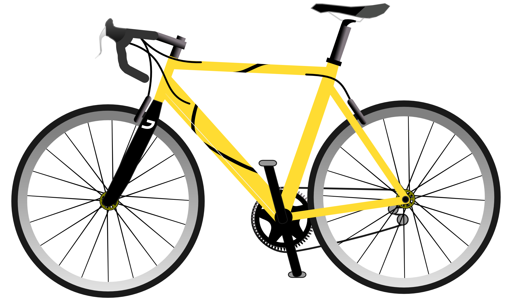
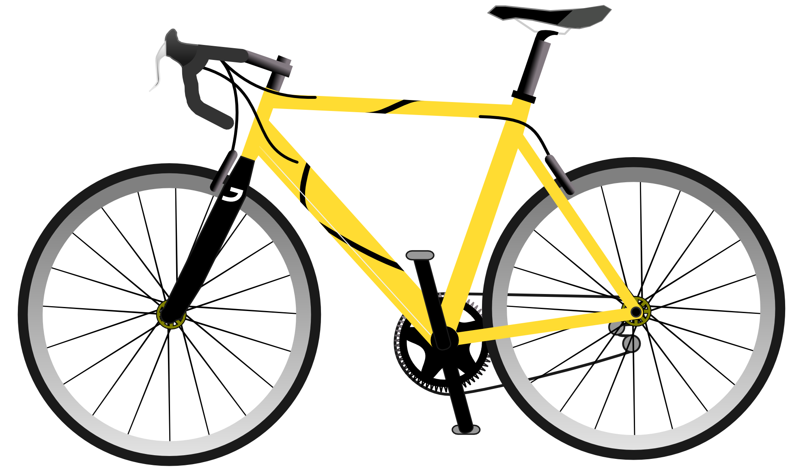
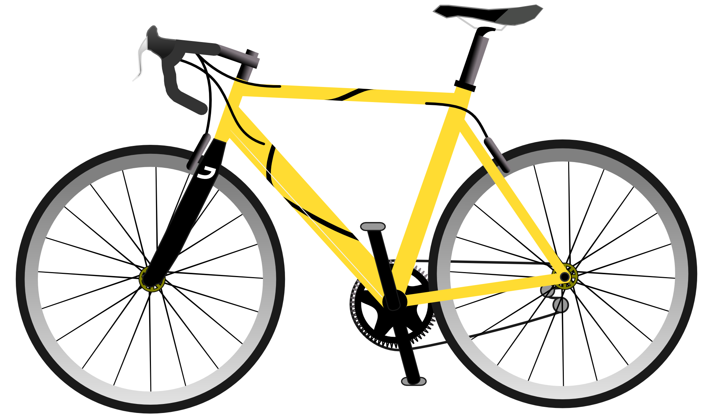
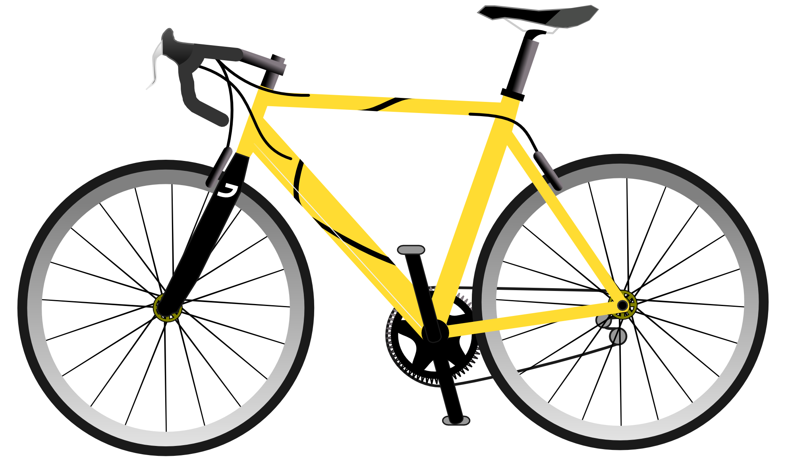
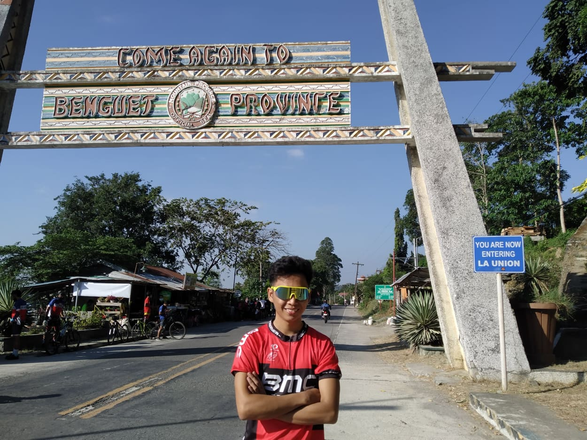
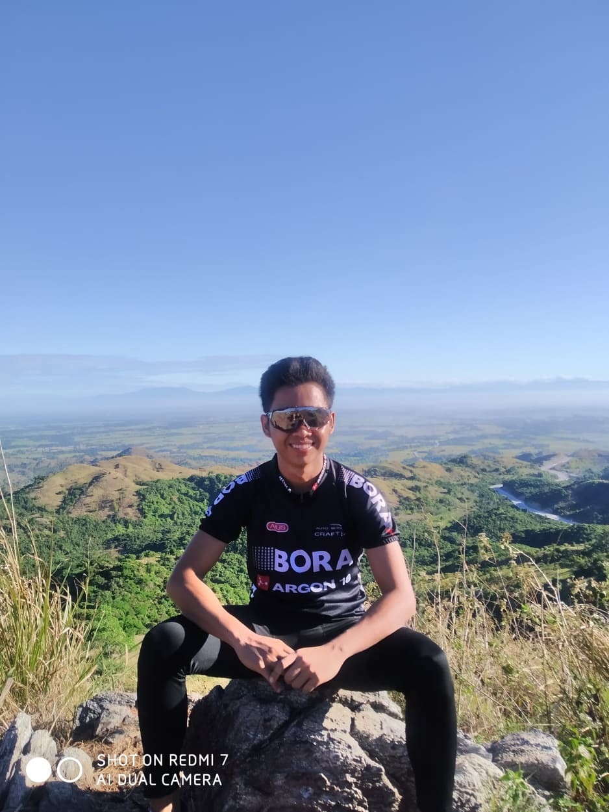
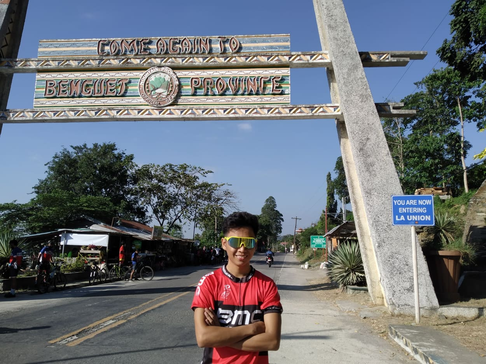
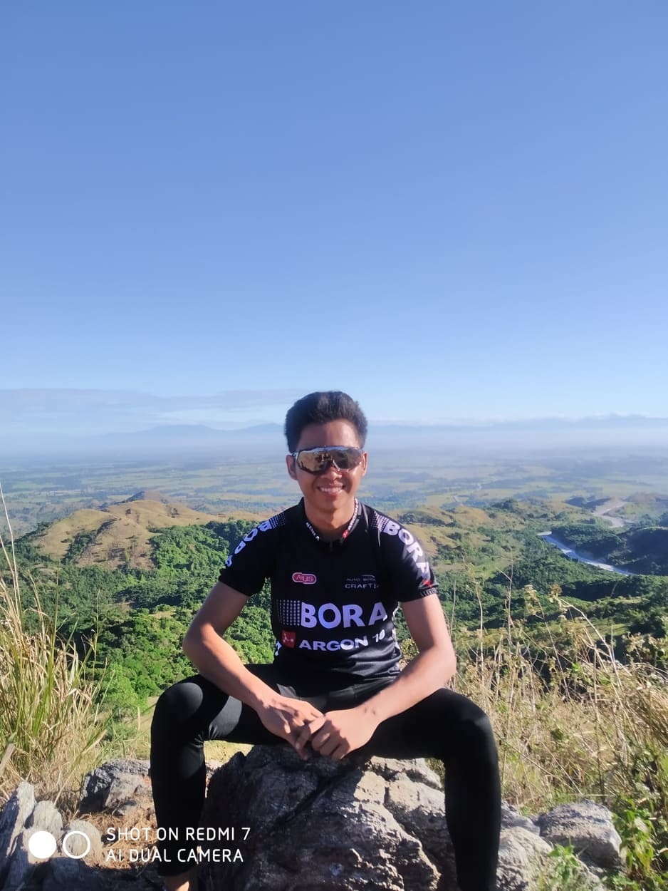

Hi! I'm Manuel.
a cyclist and programmer.
 

 

 



Humans are the most superior creatures amid all the creatures in the entire universe. Being a part of this universe makes me feel small and minuscule in a world where there millions of humans like myself. Although everyone is quite unique in their own way. I try my best to be humble, kind and respectful of everybody I meet regardless of their age, gender, family background, nationality or race. It is not an easy task to write about one’s self because one may tend to either over exaggerate or fail to give succinct descriptions and commendations where necessary. It is with this background that I introduce myself. My name is Manuel S. Mandapat III. I was born on the 5th of September in 2001, which means I am 19 years old now. I have been living and studying in Pangasinan. I love going to mountains using my bicycle and I have always taken my studies very seriously. I have got big dreams, when it comes to studies. Since I was 15 years old, I decided to be IT expert in Facebook Company. So that is my goal and I always try to aim to do my best at school, so hopefully my hard work will pay off in the end. I don't really know why I decided to be IT expert. I just love games. Some interests I have got are; biking, watching movies, playing basketball, playing table tennis, and praying. I love to bike, because bike can remove my stress. Moving on to my favorite movies are all action movies. Playing basketball and table tennis has been a huge interest of mine. Playing is one of the bounding that I love in our family. Then last but not least I love praying. I pray as much as I can. Being a Christian and not praying, just doesn't go together, so that is why I pray. I also feel that whenever I pray, it helps me getting forward and achieving more and more.